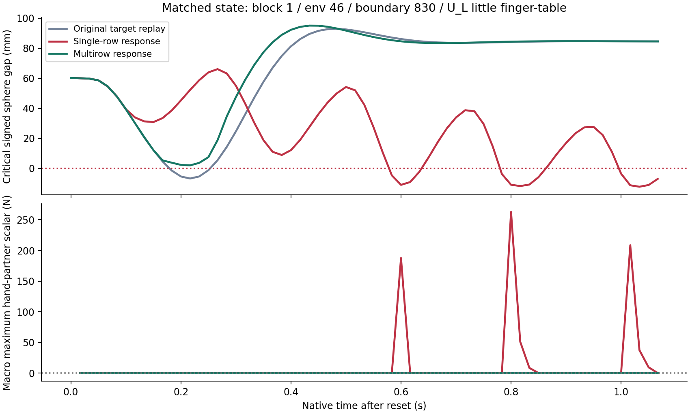
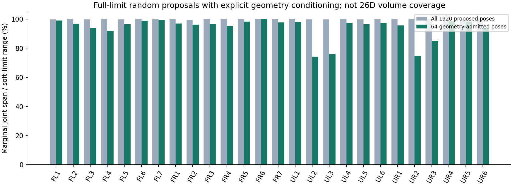
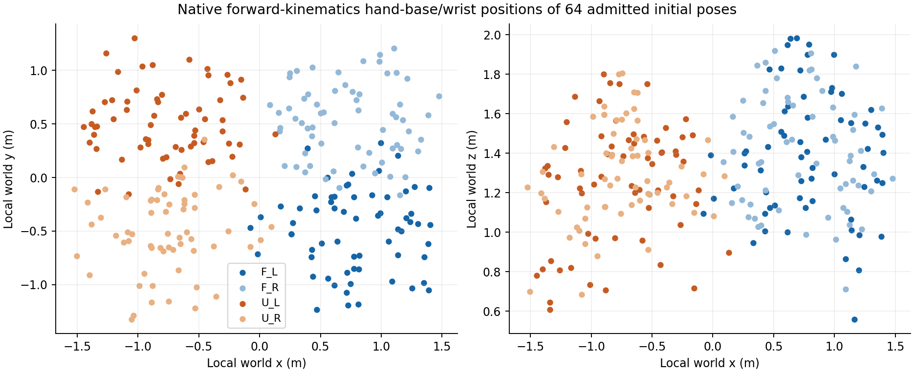

8 → 2
已知时间点的几何失败
已知案例有改善；广域随机与完整安全验收未通过
本轮测试执行保护原型，未运行训练后的完整 System0。先复现两个原始失败轨迹，再修复单行退让引入的新接触风险。以下结果来自原生物理记录；四臂运动重放不是四手共持或带载夹持成功证明。
已知时间点的几何失败
本轮多行候选修复
相对参考的关节路径
完整 System0 / 硬件安全
原始第 2 批 env 46、时间边界 830：三方法保留相同的六槽延迟队列。俯视、正视、侧视包含四臂；细节机位聚焦 U 左臂。24 段视频均为原生图像编码，约三倍慢放，原生片段长 1.067 秒。相机重放的全部 180 个原生字段与评分运行逐项精确相同；不增加独立实验样本。
同一初态；安全球负间隙，所记录手部力为零，不能由此认定整臂实际无接触。
手部逐点法向峰值 262.80 N；关键间隙最低 −12.17 mm。
关键间隙最低 +2.03 mm；记录的全部 9,021 条原始约束无负间隙、手部力未超 0.1 N。
视频封面是宏步 47、子步 1 后的原生状态，与 262.80 N 峰值微步的全部 q/qd 精确绑定。显示的是同一仿真状态；法向力标量和安全球间隙是不同判据。峰值时序核对。无 JavaScript 时也可直接播放下方全部原始视频。
env 8 · top WebMMP4 env 8 · front WebMMP4 env 8 · side WebMMP4 env 8 · detail WebMMP4 env 9 · top WebMMP4 env 9 · front WebMMP4 env 9 · side WebMMP4 env 9 · detail WebMMP4 env 10 · top WebMMP4 env 10 · front WebMMP4 env 10 · side WebMMP4 env 10 · detail WebMMP4 env 48 · top WebMMP4 env 48 · front WebMMP4 env 48 · side WebMMP4 env 48 · detail WebMMP4 env 49 · top WebMMP4 env 49 · front WebMMP4 env 49 · side WebMMP4 env 49 · detail WebMMP4 env 50 · top WebMMP4 env 50 · front WebMMP4 env 50 · side WebMMP4 env 50 · detail WebMMP4

8 个时间点来自 2 条已知轨迹，每方法 64 宏步、128 物理子步。距离记录在宏步边界，逐点力记录在每个物理子步，不构成连续时间保证。各时间点相关，不能作为 8 条独立随机轨迹计算可靠性置信度。本系列早期响应试验与本轮合计覆盖 12 个独特时间边界；重复拍摄与改版重放不增加独立样本。
| 条件 | 原始几何负间隙 | 手部力 >0.1 N | 峰值 N | 关节路径 / 参考 |
|---|---|---|---|---|
| 原始目标重放 | 8/8 | 0/8 | 0.00 | 100.0% |
| 单行响应，0.05 rad | 4/8 | 2/8 | 262.80 | 124.9% |
| 多行响应，0.05 rad | 2/8 | 0/8 | 0.00 | 100.3% |
| 多行响应，0.02 rad | 8/8 | 0/8 | 0.00 | 100.0% |
| 无延迟多行 0.05（ORACLE） | 0/8 | 0/8 | 0.00 | 102.7% |
| 无延迟多行 0.02（ORACLE） | 4/8 | 0/8 | 0.00 | 104.2% |
| 移除送达外推 | 2/8 | 0/8 | 0.00 | 101.5% |
| 仅使用臂关节速度 | 2/8 | 0/8 | 0.00 | 100.3% |
多行 0.05 rad 候选修复 6 个时间点，没有新增本次手部力超限；全部 8 个时间点均有四臂运动。两项消融得到相同失败数，尚未证明送达外推或手部速度项的单独贡献。
原始 env 49、边界 892，以及 env 46、边界 838，均在零基宏步 2 结束（约 50 ms）出现负间隙；本次新指令到宏步 6 开始才施加（约 100 ms）。前六步目标完全一致。因此这两个初态需要更早准入或队列撤销能力；无延迟 ORACLE 把失败降至 0/8，只能说明诊断对照的效果，不能计作当前可执行策略通过。
原生质量矩阵、完整手部 Jacobian、重力开关、转子惯量和执行器限值均已记录。修正重力解释后，已知样本七步预测仍漏掉 39/254 个未来负间隙观测；这些是相关的预测观测，不能当成 System0 失败率。多行求解器全部 512 个时间点观测仍存在名义约束残差；执行器饱和后的真实响应和停止距离尚未得到可信上界。当前改善是实测开发结果。
早期单行 0.15 rad 候选曾产生 1,001.51 N 手部法向峰值，已拒绝。这里的新候选没有沿用该失败条件。多行版本选择 512 个邻近候选中的 24 条臂关节可影响约束；全部 9,021 条原始距离仍参与评分。指标范围说明。
首批 64 个无筛选随机姿态全部初始几何冲突，已保留诊断并中止其策略比较，未将它们混入可操作空间安全率。随后按预登记 seed，在四臂全部 26 个关节的完整软限位中独立均匀采样，共 1,920 个候选：1,852 个负间隙、1 个未达到 0.1 mm 初始余量、67 个达到几何条件，按出现顺序取前 64 个；另外 3 个也保留。筛选不读取策略结果。
选中初态各关节的边际跨度为软限位的 74.2%–99.95%。这说明边际范围比旧轨迹更广，不证明 26 维联合空间充分覆盖。手部初态及根位姿未随机化；物体、负载、故障和真实夹持尚未覆盖。


速度幅度为原生限值的 0%、10%、25%、50%；纯随机位置指令幅度 0.05、0.10、0.20、0.35 rad，每 8 步独立换一次指令，种子及完整输入被冻结。几何初态合格后仍需物理资格检查：整臂原生记录已揭示前臂—腕部原始接触与安全球语义需要核对；既有语义明确豁免部分腕簇邻接，不因此允许任意大接触力。所有失败和不合格输入均保留。
已闭合：64 个新初态 × 2 方法 × 8 秒。两方法共享的前六步施加目标及 q/qd 精确相同；其中 34/64 满足共同前缀几何和整臂力条件。其余 30 个仍保留在完整账本，不能当成准入合格状态下的策略失败率。
| 方法 | 共同合格初态 | 后续几何失败 | 整臂力超限 | 任一门槛失败 |
|---|---|---|---|---|
| 纯随机目标，无保护 | 34 | 20 | 13 | 21 |
| 多行响应候选 | 34 | 17 | 13 | 19 |
相对无保护：修复 2，新增失败 0。保护组仍有 19/34 个共同合格状态触发至少一项门槛，不能宣称已安全。两组整臂力超限均为 13/34；保护组 17/34 有几何负间隙。候选平均路径为参考的 98.4%，34 个状态均有四臂运动。宏步采样的硬限位越界为参考 9/34、候选 8/34，速度限值超限均为 15/34；这些是新增诊断，未用来改写预注册的几何／原始力主门槛。实际执行跨度不能因越界而当作健康操作范围覆盖。这是单个新种子开发比较，不能称为独立最终留出验收。全部 64 状态及覆盖结果。
物理可行覆盖仍有缺格：16 个速度／幅度组合只有 15 个包含合格状态；10% 速度、0.20 rad 幅度组合为 0/4。不能据此推断该组合不可操作，也不能称已充分覆盖。下表为共同前缀合格数。
| 速度幅度 | 0.05 rad | 0.10 rad | 0.20 rad | 0.35 rad |
|---|---|---|---|---|
| 0% | 3/4 | 2/4 | 2/4 | 2/4 |
| 10% | 3/4 | 2/4 | 0/4 | 2/4 |
| 25% | 2/4 | 3/4 | 2/4 | 3/4 |
| 50% | 2/4 | 2/4 | 1/4 | 3/4 |
候选名义约束满足数仅 6/30,720 个时间点观测；相关观测不能当成独立试验或安全概率。
新增模型纳入执行器力饱和和质量矩阵中的耦合硬限位反力，4 项独立解析例通过。随后在本次数据中抽取 1,024 个观测原点，比较一个物理子步后的原生状态；这些是事后筛选的无外部接触观测，来自已有窗口，未增加独立物理实验。筛选读取了未来子步来隔离接触影响，不能充当在线准入或留出验收。
| 臂 | 无饱和模型最大臂关节误差 mrad | 饱和模型 | 饱和＋耦合硬限位 |
|---|---|---|---|
| F_L | 5.793 | 2.173 | 2.173 |
| F_R | 2.786 | 2.786 | 2.786 |
| U_L | 11.149 | 3.621 | 3.621 |
| U_R | 24.657 | 1.717 | 1.717 |
饱和处理改善了部分极端臂关节误差，但三个模型均未达到预定原生匹配门槛。手部最大位置误差仍约 0.069 rad；耦合硬限位单独不能解决这些差异，内部 mimic／tendon 约束、实际重力标记和原生积分响应需继续核对。全部误差与拒绝记录。模型仍未用于安全证书或自动替换策略。
新随机试验的法向力范围扩展至四臂所有刚体拥有者，与已知案例的手部力范围不同，不横向拼接安全率。仍不包含完整摩擦力安全边界、连续时间球距离和硬件实验。
全部已知状态结果手部逐点独立复算视频运行逐点复算录像与评分绑定预登记与消融随机筛选账本全部候选关节与末端位置新随机原始协议完整随机指令与速度输入参考组原始接触的静态语义归因候选组语义归因原生初态／手部／根位姿冻结输入与执行协议核对
下一步必须核对腕簇结构邻接的实际网格接触，再补足安全球与原生接触的覆盖差异，校准带饱和执行器和六槽队列的响应，随后冻结策略再做多种子独立验收、真实夹持带载与四臂协同任务。不能把本轮开发试验标记为这些能力已通过。
本页发布派生结果、代码、随机候选库和原生录像。大体量逐点流保存在注册的本地目录，尚未全量公开归档；0.1 N 是本项目试验门槛。新随机原始协议包含旧诊断继承字段，原文件保持不变；实际种子、16 个速度／幅度单元各 4 个初态及整臂力范围由冻结代码和输入哈希核对，见执行协议说明。